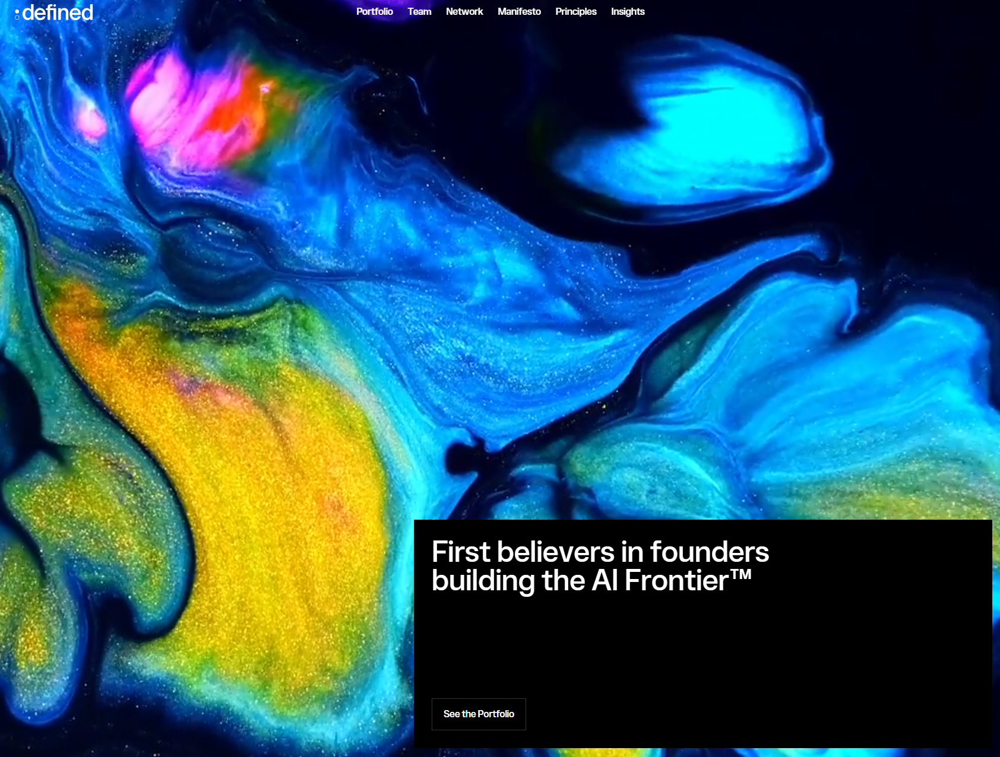

Defined
- Корпоративный
- Финансы и банки
- Финтех
- Инвесторам
- Продуктовым командам
- Иммерсивный 3D
- Редакционный
- Тёмная тема
- Синий фон
- Генеративная графика
- Микроанимации
- Кастомный курсор
- Framer
- Google Analytics 4
- Английский язык
- Действующий сайт

Что это
Сайт венчурного фонда Defined, который инвестирует в ИИ с 2014 года. Первый экран занимает текучая цветная анимация — синие, жёлтые, розовые и оранжевые потоки, похожие на краску в воде. Поверх — меню и чёрный блок с текстом «First believers in founders building the AI Frontier™». Вдохновляющий сайт венчурного фонда, который инвестирует в ИИ-технологии. В шапке сайта красочная интерактивная анимация, которая дополняется ховер-эффектом с кляксами.
Что смотреть в первую очередь
Провести курсором по цветной анимации и посмотреть на кляксы; затем прочитать манифест в чёрном блоке.
Приёмы
- Генеративная графика
- Микроанимации
- Кастомный курсор
Интересные факты
- Первый экран — абстрактная цветная анимация: синие, жёлтые, розовые и оранжевые потоки, похожие на краску в воде.
- Сверху — маленькое логотип `defined`, меню Portfolio, Team, Network, Manifesto, Principles, Insights.
- Справа внизу — чёрный блок с крупным «First believers in founders building the AI Frontier™» и кнопкой See the Portfolio.
- Фонд пишет, что инвестирует в ИИ с 2014 года и помогает основателям на границах науки и вычислений.
- Анимация дополняется ховер-эффектом с кляксами; на мобильных, вероятно, показывается статичный кадр.
- Сайт собран на Framer; аналитика — Google Analytics 4.
Паспорт
- Домен
- definedvc.com
- Тип сайта
- Корпоративный
- Категории
- Финансы и банки
- Подкатегории
- Финтех
- Для кого
- Инвесторам, Продуктовым командам
- Стиль
- Иммерсивный 3D, Редакционный
- Язык
- Английский
- Страна
- не указано
- Автор
- Defined
- Год
- не указано
- Добавлен в коллекцию
- 24.11.2026
Палитра
-
#00010D— 34% кадра -
#05A2F8— 11% кадра -
#036CDE— 8% кадра -
#011749— 6% кадра -
#EAC10B— 6% кадра
- Режим
- Тёмная
- Цвет фона
- Синий
Технологии
- Framer
- Google Analytics 4